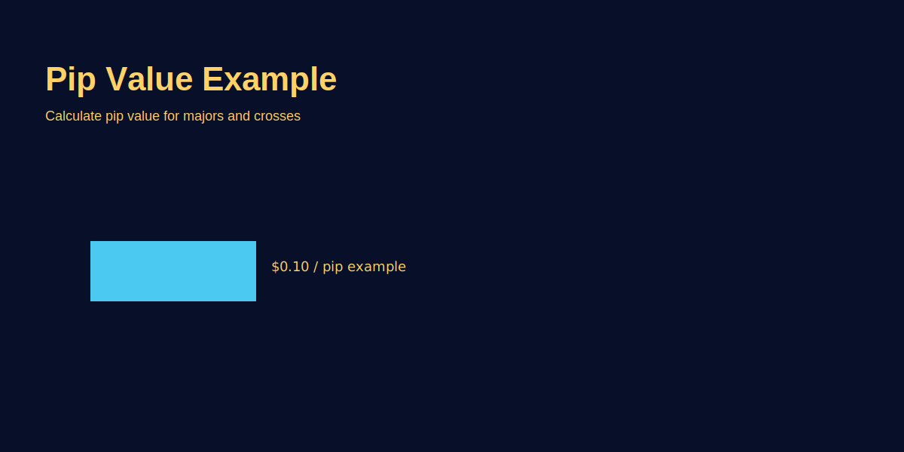

What Are Pips and Pip Value
Problem-based introduction
New traders ask: "Pips kya hote hain aur pip value kaise calculate karein?" Without this, risk calculations and profit targets will be incorrect. This article explains pips, pip value, and how to calculate for GOLD (XAU/USD) and currency pairs.
Step-by-step explanation
- Definition: A pip is the smallest price increment for a given instrument (for many pairs it's 0.0001; for XAU/USD, brokers often use 0.01 or 0.1 depending on pricing).
- Calculate pip value: Pip value = (pip size / price) * lot size * conversion. Use broker contract specs for GOLD.
- Examples: For 1 standard lot in a currency pair, a pip may equal $10; for GOLD, pip value per contract depends on oz size.
Real trading logic (GOLD example)
If broker contract = 1 oz/lot and XAU/USD moves 1.00 USD, pip value = $1 per lot (example). If stop-loss is 15.00 points, risk = 15 * $1 = $15 for 1 lot.
Image-based examples (mandatory)
Annotated example showing pip size, price, and lot multiplier.
Common Mistakes
- Using wrong pip size for instruments (gold vs currency pairs differ).
- Forgetting to convert pip value to account currency when different.
Pro Tips
- Keep a small calculator or spreadsheet to compute pip value quickly before each trade.
- Use site tools or calculators to automate pip & position sizing.
Risk Warning
Instrument specs vary—always verify with your broker and test on demo accounts.
SEO FAQs
- 1. Pip and point mein kya difference hai?
- Pip commonly means the standard smallest increment; 'point' is generic and brokers may use different decimal places.
- 2. GOLD ke liye pip value kaise nikalein?
- Depends on broker contract (oz per lot). Use formula and broker specs.
- 3. Kya pip value fixed hota hai?
- Instrument and lot size determine it; for currency pairs it can be calculated per lot.